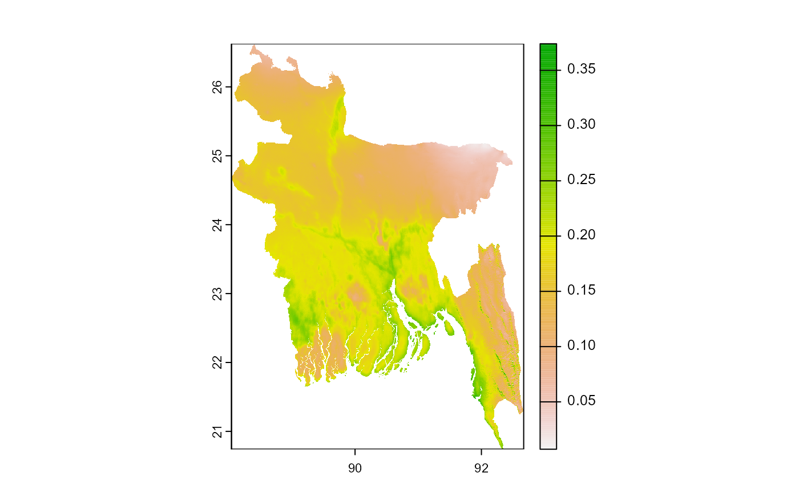
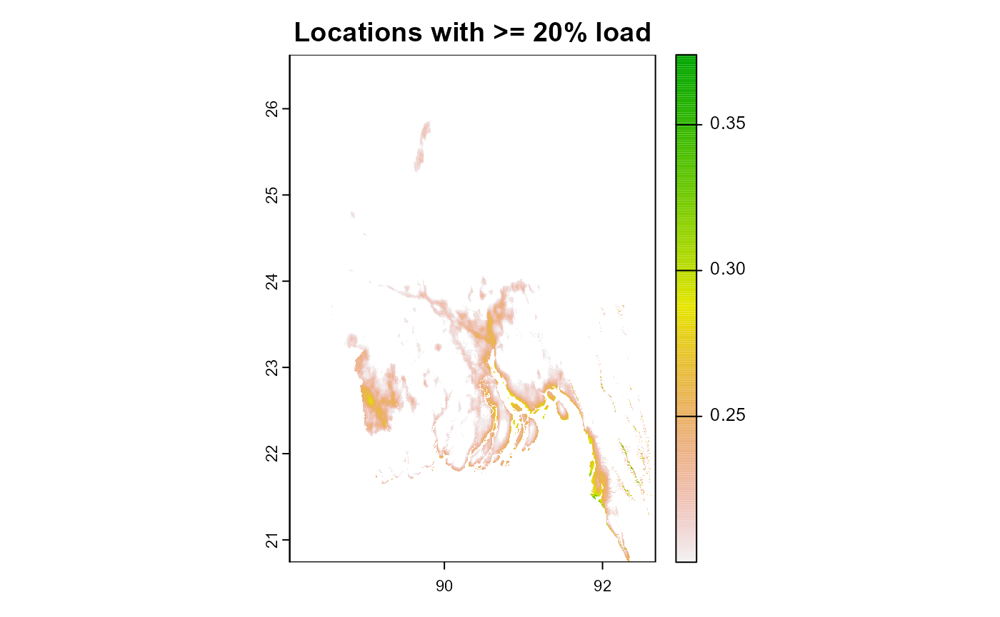
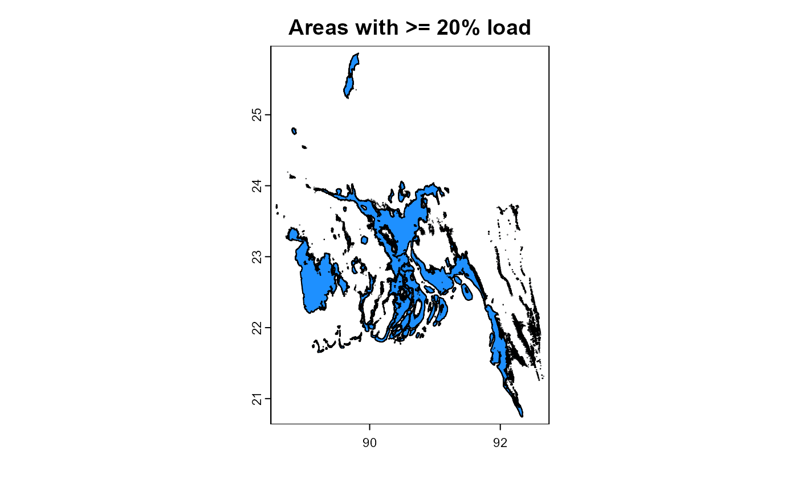
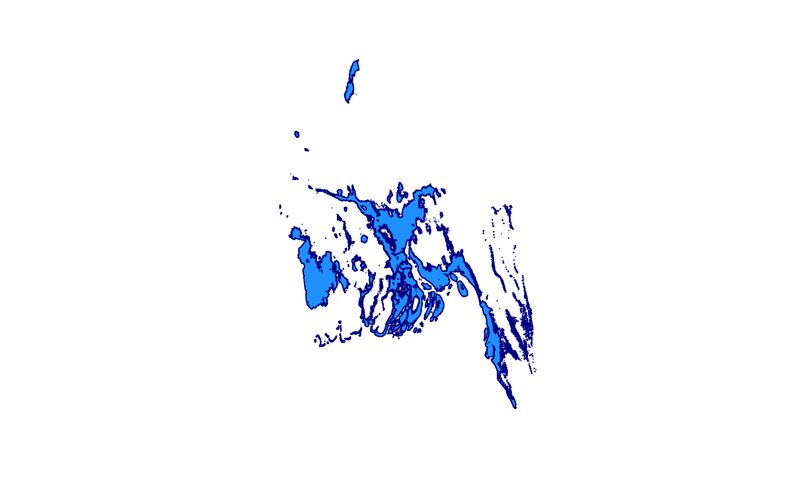
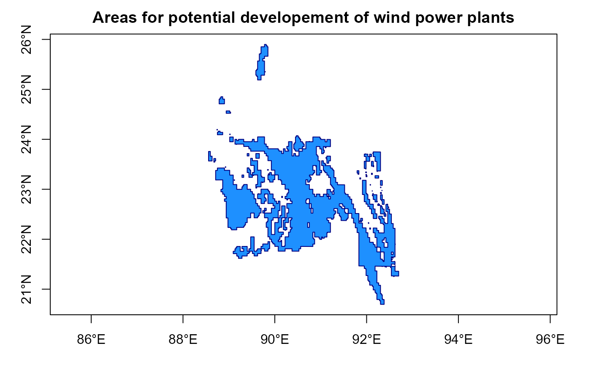

globalwindatlas
globalwindatlas.RmdDownload annual averages
## set directory for downloaded files, also will be used for quick files access
set_gwa_dir("data/gwa")
## download wind capacity factors for wind-class #1
get_wind_capacity_factor("BGD", IEC = 1)
get_wind_capacity_factor("BGD", IEC = 2) # wind-class #2
get_wind_capacity_factor("BGD", IEC = 3) # wind-class #3
## download wind speed data
get_wind_speed("BGD", height = 100)
# get_wind_speed("BGD", height = 150)
# get_wind_speed("BGD", height = 200)
# select data to plot
obj <- get_wind_capacity_factor("BGD", IEC = 2)
## plot
tr <- rast(obj)
plot(tr, main = "Wind capacity factors")
summary(tr)Filter locations with high wind potential
# select data
obj_tr <- rast(get_wind_capacity_factor("BGD", IEC = 2))
class(obj_tr)
#> [1] "SpatRaster"
#> attr(,"package")
#> [1] "terra"
plot(obj_tr)
cellSize(obj_tr)
#> class : SpatRaster
#> dimensions : 3224, 1850, 1 (nrow, ncol, nlyr)
#> resolution : 0.0025, 0.0025 (x, y)
#> extent : 88.04407, 92.66907, 18.56577, 26.62577 (xmin, xmax, ymin, ymax)
#> coord. ref. : lon/lat WGS 84 (EPSG:4326)
#> source(s) : memory
#> name : area
#> min value : 68959.36
#> max value : 72686.49
# units(obj_tr_hp)
gis_sv <- geodata::gadm("BGD", level = 0, path = "tmp/", resolution = 2)
plot(gis_sv)
obj_tr <- crop(obj_tr, gis_sv) # optional, crop the map
obj_tr <- mask(obj_tr, gis_sv) # optional, select land only
plot(obj_tr)
# keep locations with high potential (>= 20% annual load)
obj_tr_hp <- app(obj_tr, fun = function(x) {x[x < .2] <- NA; return(x)})
plot(obj_tr_hp, main = "Locations with >= 20% load")
# coerce raster data to vector-map
v3 <- as.polygons(obj_tr_hp)
plot(v3, col = "dodgerblue", main = "Areas with >= 20% load")
if (!any(is.valid(v3))) { # fix errors
v3 <- makeValid(v3)
# is.valid(o)
}
# coerce to sf-format
s3 <- sf::st_as_sf(v3)
plot(s3$geometry, col = "dodgerblue", border = "navy")
# simplify
buf_sf <- st_buffer(s3, dist = .0)
# plot(buf_sf$geometry, col = "dodgerblue", border = "navy")
sim_sf <- st_simplify(buf_sf, dTolerance = 1)
# size(sim_sf)
plot(sim_sf$geometry, col = "dodgerblue", border = "navy", axes = T,
main = "Areas for potential developement of wind power plants")